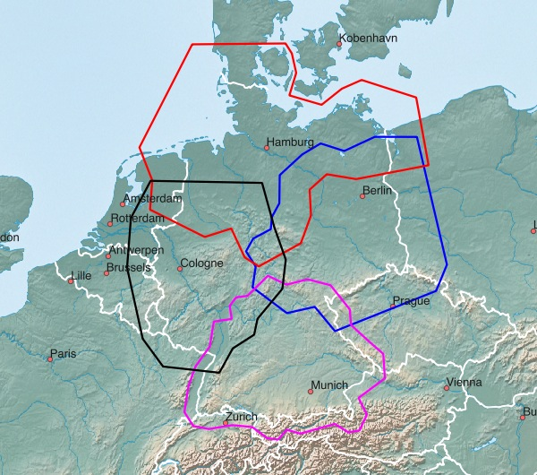
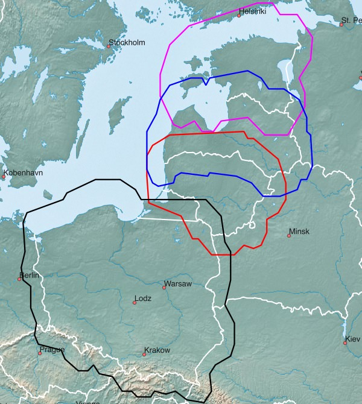
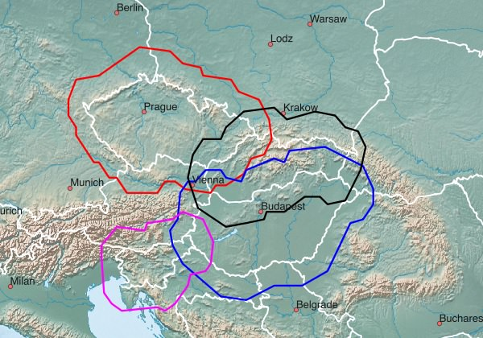

Mitteleuropa - verfügbare Karten:
| Westdeutschland | Ostdeutschland | Norddeutschland |
| Süddeutschland | Deutsche Bundesländer | Österreich |
| Schweiz | Luxemburg | Kroatien |
| Polen | Litauen | Lettland |
| Estland | Tschechien | Slowakei |
| Slowenien | Ungarn |
Hinweise zum Download:
- Klick auf das Netbook Icon im PC-Browser: die Karte wird auf den Personal-Computer geladen
- Klick auf das Locus Map Icon im Android-Browser: Karte+Design werden nach Locus Map geladen
- Klick auf das OruxMaps Icon im Android-Browser: die Karte wird nach OruxMaps geladen
West-, Ost-, Nord-, Süddeutschland:

| Westdeutschland DEU+WEST 1.1 GB MB |
| Ostdeutschland DEU+OST 564 MB |
| Norddeutschland DEU+NORD 613 MB |
| Süddeutschland DEU+SUED 814 MB |
Deutsche Bundesländer:
| Baden-Württemberg 240 MB |
|||
| Bayern 322 MB |
|||
| Berlin 25 MB |
|||
| Brandenburg 95 MB |
|||
| Bremen 9 MB |
|||
| Hamburg 16 MB |
|||
| Hessen 125 MB |
|||
| Mecklenburg-Vorpommern 55 MB |
|||
| Niedersachsen 185 MB |
|||
| Nordrhein-Westfalen 367 MB |
|||
| Rheinland-Pfalz 95 MB |
|||
| Saarland 21 MB |
|||
| Sachsen 95 MB |
|||
| Sachsen-Anhalt 59 MB |
|||
| Schleswig-Holstein 63 MB |
|||
| Thüringen 61 MB |
Österreich, Schweiz, Luxemburg, Kroatien:

| Österreich AUT+ 850 MB |
| Österreich AUT 389 MB Genaue Höhenlinien |
| Schweiz CHE+ 573 MB |
| Luxemburg LUX+ 105 MB |
| Luxemburg LUX 14 MB Genaue Höhenlinien |
| Kroatien HRV+ 313 MB |
Polen, Litauen, Lettland, Estland:

| Polen POL+ 943 MB |
| Litauen LTU+ 123 MB |
| Lettland LVA+ 106 MB |
| Estland EST+ 102 MB |
Tschechien, Slowakai, Slowenien, Ungarn:

| Tschechien CZE+ 777 MB |
| Slowakei SVK+ 374 MB |
| Slowenien SVN+ 305 MB |
| Ungarn HUN+ 286 MB |